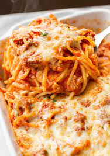

Description
This million dollar spaghetti is the perfect combination of pasta, ground beef, and cream cheese. It's unbelievably good! Serve with garlic bread and salad. Enjoy!
Ingredients
- 1 (8 ounce) package spaghetti
- 1 pound lean ground beef
- 1 (16 ounce) jar spaghetti sauce
- ½ cup butter, sliced - divided
- 1 (8 ounce) container cottage cheese
- 1 (8 ounce) package cream cheese, softened
- ¼ cup sour cream
- 1 (8 ounce) package shredded sharp Cheddar cheese
Directions
- Preheat the oven to 350 degrees F (175 degrees C).
- Bring a large pot of lightly salted water to a boil. Cook spaghetti in boiling water until cooked through but firm to the bite, about 12 minutes. Drain.
- Heat a large skillet over medium-high heat. Cook and stir beef in the hot skillet until browned and crumbly, 5 to 7 minutes; drain and discard grease. Transfer to a bowl and mix in spaghetti sauce.
- Place 1/2 of the butter slices into the bottom of a 9x13-inch casserole dish. Spread 1/2 of the spaghetti into the dish.
- Mix cottage cheese, cream cheese, and sour cream together in a bowl; spread mixture over spaghetti. Cover with remaining spaghetti and top with remaining slices of butter.
- Pour ground beef mixture over spaghetti and spread in an even layer.
- Bake in the preheated oven for 30 minutes. Spread Cheddar cheese on top and continue baking until cheese has melted and is lightly browned, about 15 minutes more.
Return to top
Return to Ingredients
Return to Directions
Return to Main Page